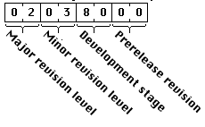
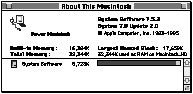
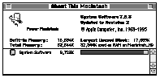

Legacy Document
Important: This document is part of the Legacy section of the ADC Reference Library. This information should not be used for new development.
Current information on this Reference Library topic can be found here:
ADC Home > Reference Library > Technical Notes > Legacy Documents > Mac OS 9 & Earlier >
Important: This document is part of the Legacy section of the ADC Reference Library. This information should not be used for new development.
Current information on this Reference Library topic can be found here:
|
About System 7.5.3 Revision 2System 7.5.3 Revision 2 is a small set of bug fixes meant to be applied to System 7.5.3. These fixes apply to any machine currently running System 7.5.3. (The update also brings PowerBook Enabler 1.2.x up to version 1.2.4 when installing these fixes. In that one case, System 7.5.3 Revision 2 applies to some PowerBook computers running System 7.5.2.) System Enabler ChangesBoth the System 7.5 & 7.5.2 Update Enabler are modified by System 7.5.3 Revision 2. System 7.5.3 Revision 2 changes the enabler for your machine to fix the following problems:
Type 8 ErrorsIn certain cases, the state of the 68K status register (SR) was saved from a copy on the stack after the processor had switched stacks. As a result, the restoration of SR wasn't quite right. This has been fixed. Note that the fix only applies to PowerBook computers. Among other behaviors, this bug caused Type 8 errors for PowerBook users when coming out of Sleep if they had RamDoubler installed. Cache FlushingA performance patch in the enabler was applied to the PowerBook 5300 series
when it should have been applied to all PowerPC-based PowerBooks. This patch to
Floppy Driver on the 5300If the user first inserts a PC floppy disk into the PowerBook 5300, the disk becomes unreadable on PCs. To fix this problem, the timings in the PowerBook 5300 floppy disk driver (i.e., how it reads and writes data) were modified and adjusted. Dynamic Recompiling EmulatorThere was a problem in the Dynamic Recompiling Emulator which resulted in corruption of the emulated 68K SR register's C bit. The root cause of this bug was corruption of the PowerPC XER register, resulting in destruction of the emulated 68K SR register's C bit. This fix affects PCI Mac OS machines, as well as the 5300 and 2300 PowerBook series. A Potential SCSI ProblemBecause of an ambiguity in the SCSI specification, there can be cases where the SCSI Manager incorrectly returns data errors. This situation occurs when certain IBM drives, with write caching disabled, finish their last data phase transfer. The drive does not perform a SAVE_DATA_POINTERS before doing the SCSI disconnect. When the drive reconnects to send status, the SCSI Manager does an implied RESTORE_POINTERS which moves the data pointer to where it was at the beginning of the previous connection. The data pointer is not the same as the data pointer in the original transfer. The SCSI Manager thus returns a residual length error. Previous versions of the SCSI Manager worked around this problem by assuming that if the device went to status phase on the subsequent reselect that the previous connection was OK and that therefore there was no reason to perform the implied RESTORE_POINTERS. With the internal fast bus on the PCI Power Macintoshes, the SCSI Manager did not "know" the device was in status phase after the reconnect because of a difference in the way the controller works. The SCSI Manager now correctly issues the RESTORE_POINTERS command. The transaction will be correctly reported as successful. This fix affects only PCI PowerMacs running Mac OS which use the 1 gigabyte IBM drive with write caching disabled. Apple ships these drives with write caching enabled. However, write caching may be disabled by some third-party SCSI utilities. This is a preventive measure rather a common occurrence. For more details on write caching, see Technote 1040 "Write Cache Flushing: Techniques for Properly Handling System Shutdown." Startup Tuner INIT ChangesDrive Spin UpWhen a Power Macintosh is powered on, it may not boot properly from the hard drive selected in the Startup Disk control panel. This problem only occurs with virtual memory turned off. Even if virtual memory is turned on again, the problem may still occur. This fix affects only PCI Power Macintosh computers. Other ChangesSystem 7.5.3 comes pre-installed on some machines. System 7.5 Update 2.0 contains additional bug fixes beyond those found in System 7.5.3 as installed on some early machines. For details on the differences between System 7.5.3 and System 7.5 Update 2.0, refer to the "Two Implementations" section of Technote 1017. System 7.5.3 Revision 2 installs most of the bug fixes listed in the "If System Software 7.5.3 is Present..." section of Technote 1017, if those bug fixes are not already installed. The updater will not install all of the bug fixes described in Technote 1017 because some of these resources are installed directly into the system file instead of into the enabler -- including some networking resources, the latest IR Talk driver resource, and some international resources. System 7.5.3 Revision 2 may require the creation of a "System 7.5.3 Enabler" on some machines which currently do not ship with such an enabler as part of System 7.5.3. If the "System 7.5.3 Enabler" is created, it will contain all of the bug fixes listed above, as well as most of the bug fixes listed in the "If System Software 7.5.3 is Present..." section of Technote 1017. If a machine already has a "System 7.5 Enabler" or "System 7.5.2 Enabler" installed, then that enabler is updated instead. Detecting System 7.5.3 Revision 2To distinguish between the multiple versions of system software, the  Figure 1. The format of the Gestalt response for the 'sysu' selector. The presence of the Using the 'sysv' and 'sysu' Gestalt SelectorsHere is how you can use the
Changes in the "About This Macintosh" Dialog BoxWhen System 7.5.3 Revision 2 is installed, the second line of the "About This Macintosh" dialog box becomes "Updated to Revision 2." Due to some unresolved Finder issues, the copyright string displayed in the "About This Macintosh" dialog box does not change; the first release of this Technote claimed that it did.  Figure 2. "About This Macintosh" dialog box with System 7.5 Update 2.0  Figure 3. "About This Macintosh" dialog box with System 7.5.3 Revision 2 ReferencesTechnote 1017, "System 7.5 Update 2.0; Macintosh System 7.5.3." Technote 1040, "Write Cache Flushing: Techniques for Properly Handling System Shutdown." Downloadables
|
|